Empowering your recovery with personalized physiotherapy care.
Book a ConsultationWelcome to Matthew Aucamp Physiotherapy, where your well-being is our paramount focus. Situated in the heart of Gqeberha, we specialize in comprehensive care tailored to your specific needs, whether it's men's health, musculoskeletal, orthopaedic, or geriatric concerns.
Founded by myself, Matthew Aucamp, our practice is renowned for its compassionate and effective patient-centered approach. I combine the latest in physiotherapeutic techniques with a personalized touch, crafting treatment plans uniquely suited to your individual journey. My mission is to empower you through enhanced mobility and pain management, promoting not just recovery, but a better quality of life. You can expect to be treated with the utmost dignity, respect, and professionalism every step of the way.
Discover personalized physiotherapy solutions at Matthew Aucamp Physiotherapy, where your journey to effective treatment and recovery begins.
Contracted in with medical aids including Discovery spinal conservative care program
Begin your personalized recovery journey with a detailed initial consultation, crafting a treatment plan that aligns with your unique health goals.
1 HourKeep your recovery on track with regular progress evaluations, fine-tuning your treatment for maximum effectiveness and goal achievement.
45 minsAccess expert physiotherapy from the comfort of your home, with personalized sessions designed to meet your unique recovery needs.
"I visited Matthew Aucamp Physiotherapy during the time when I suffered from extreme back pain, as well as after my back operation. Matthew is an absolute jewel who always puts his patients first and ensure that they receive the best treatment. He is a real gentleman and treats his patients with utmost respect. With Matthew you are not just a number, but a very valuable patient. I strongly recommend Matthew Aucamp Physiotherapy!"— Marie van Rooyen, ★★★★★
"We were so blessed when Matthew was suggested to us and we could not have asked for a better Physiotherapist. If I could give a million stars I would have. He really goes above and beyond for his clients. My father in law is showing more and more improvement and we could not have done this without him. I would suggest Matthew to each and everyone out there. So friendly and very easy to talk to."— Soné Strydom, ★★★★★
"Matthew Aucamp is an amazing physiotherapist. He’s extremely friendly, professional, and makes you feel comfortable from the start. He does a great job explaining exercises and treatment, and you can tell he truly cares about his patients progress. I highly recommend him!"— Niki Fouche, ★★★★★
"Matthew AuCamp is in amazing physio who helped me recover from a fractured ankle in record time. He provided a personalized treatment plan, clear guidance, and constant encouragement helping me regain strength and mobility much faster than I expected. Each session was professional, focused, and tailored to my progress. Thanks to Matt, I’m back on my feet and feeling stronger than ever. Highly recommend!"— Kay Brandt, ★★★★★
"My Dad was severely injured in a car accident and suffered a spinal injury. Matt has been working with him for the past while. He has been brilliant - his knowledge, understanding of various muscle groups and exercises have been very thorough and specific to my dad’s injury and progress. He is very calm but also very motivating at the same time. He understands how far to push the patient and also has a very high EQ when dealing with various situations, such as managing expectations."— Michael Rushmere, ★★★★★
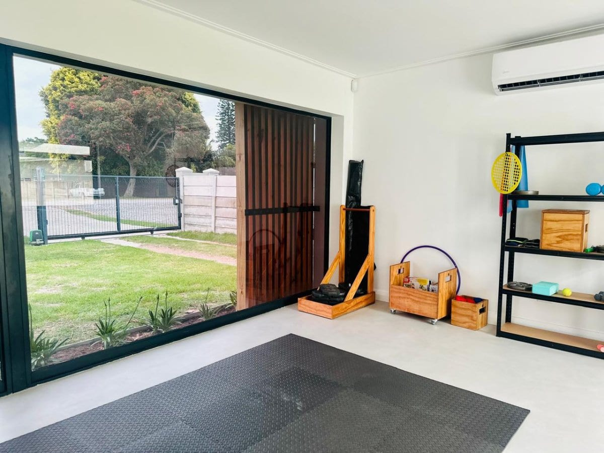
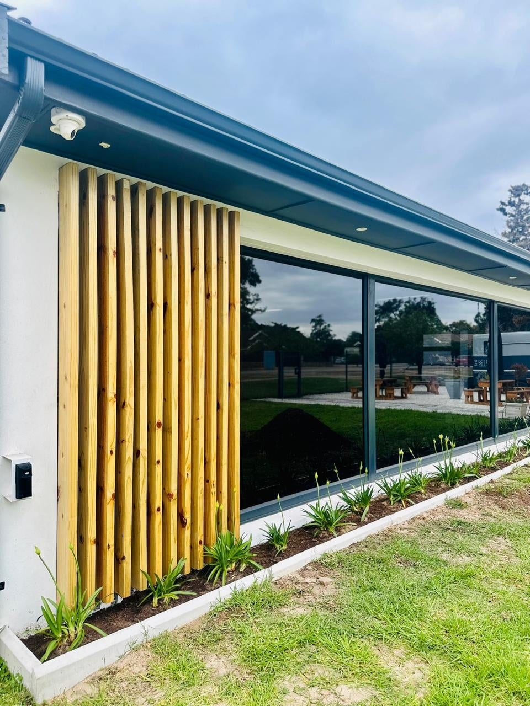
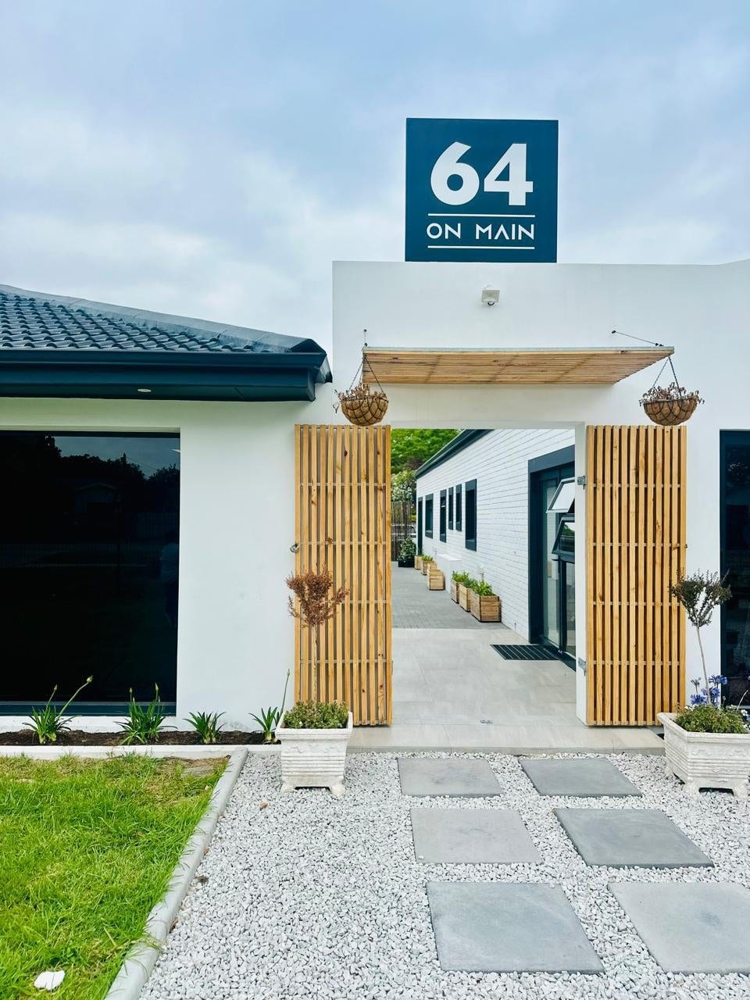
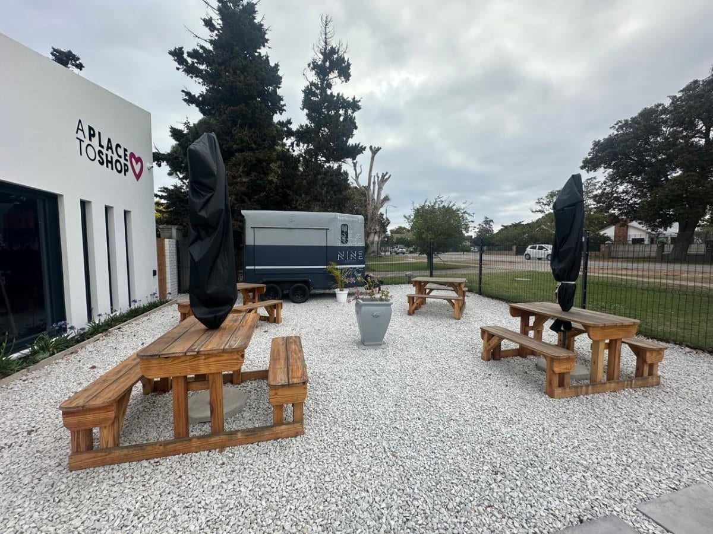
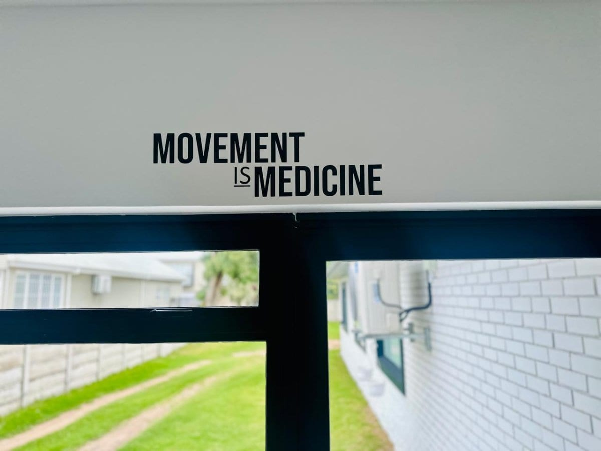
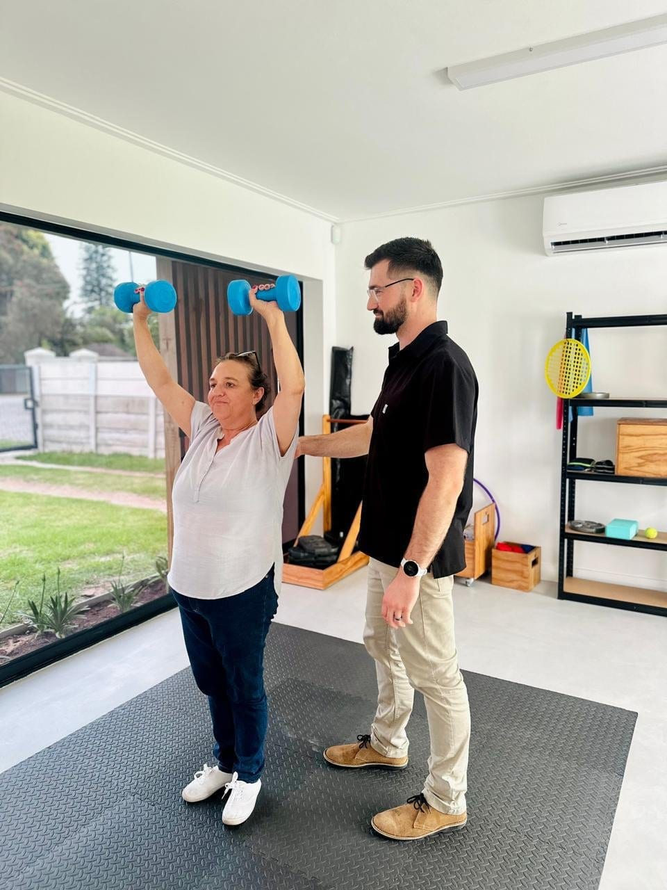
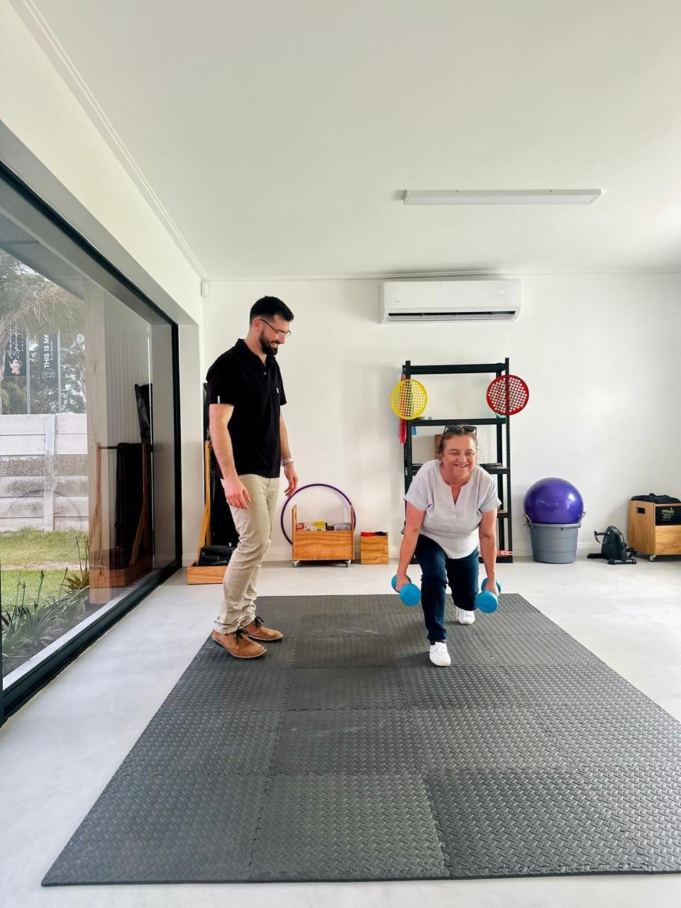
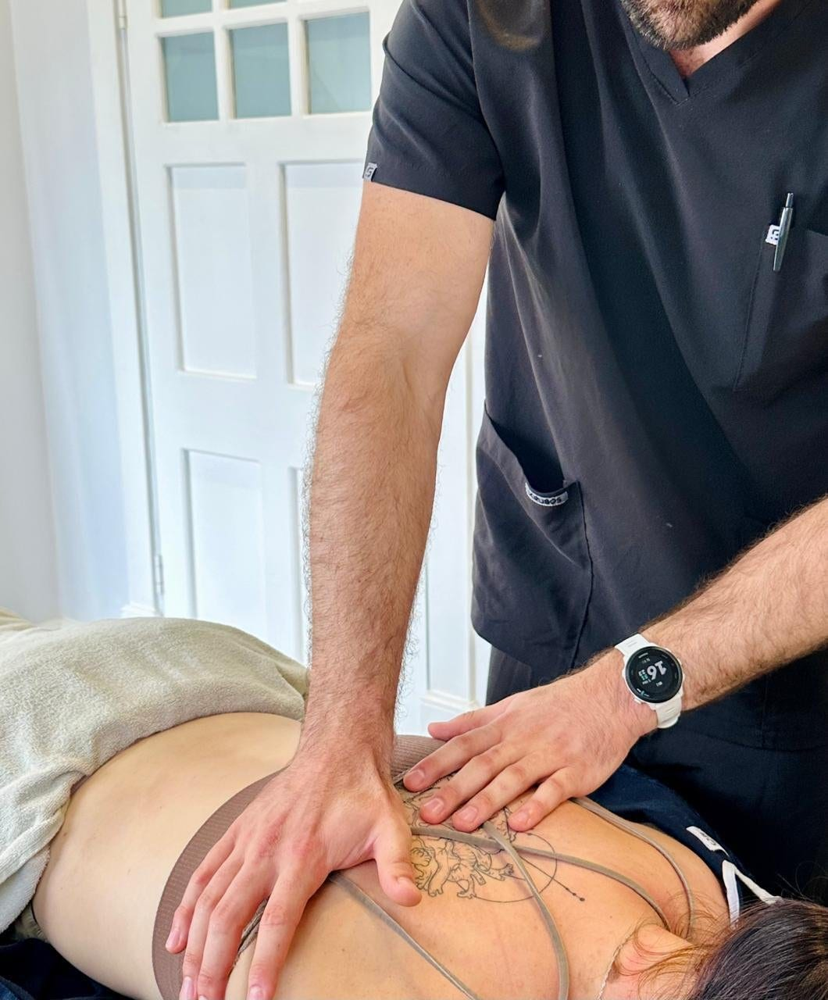
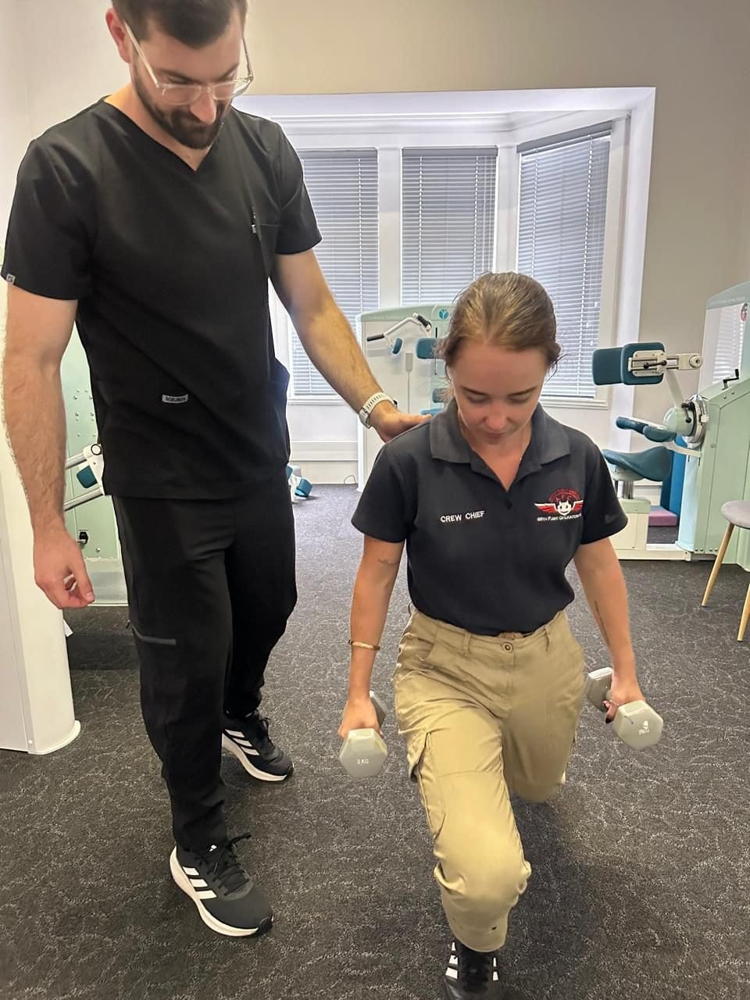
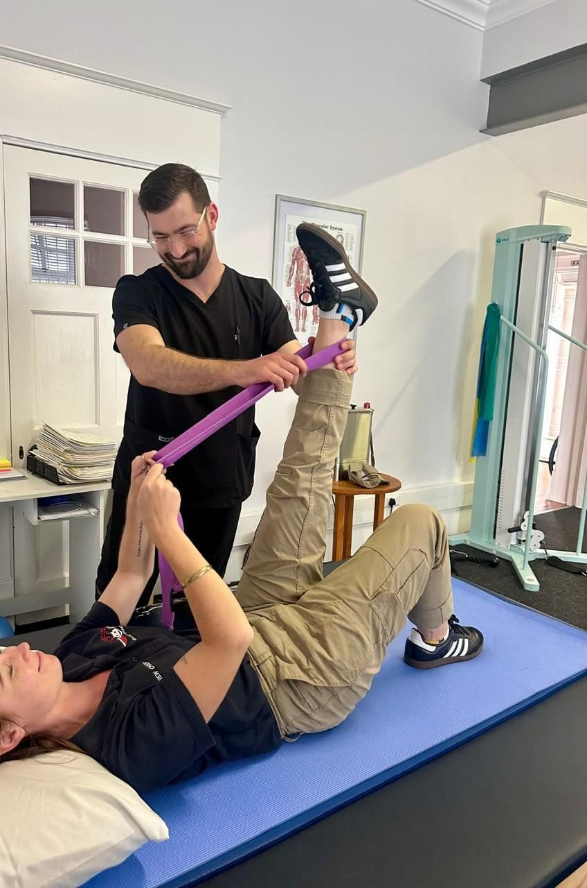
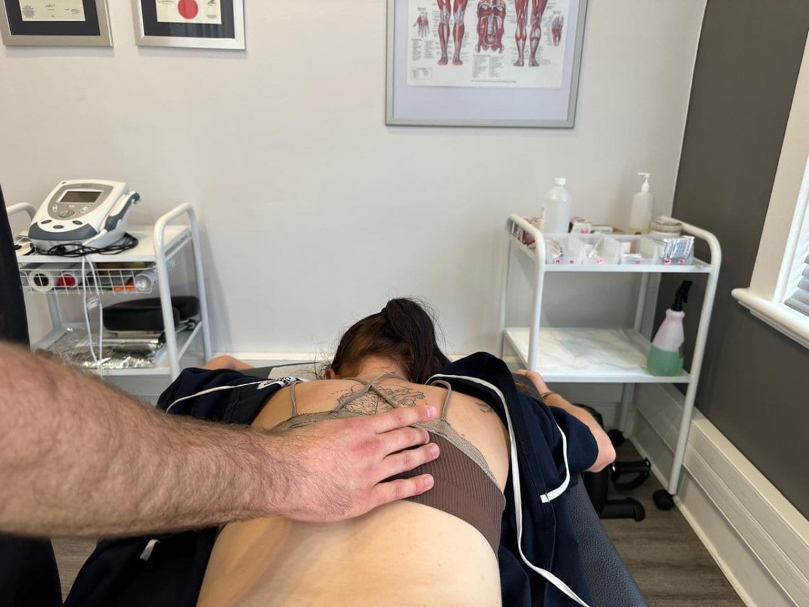
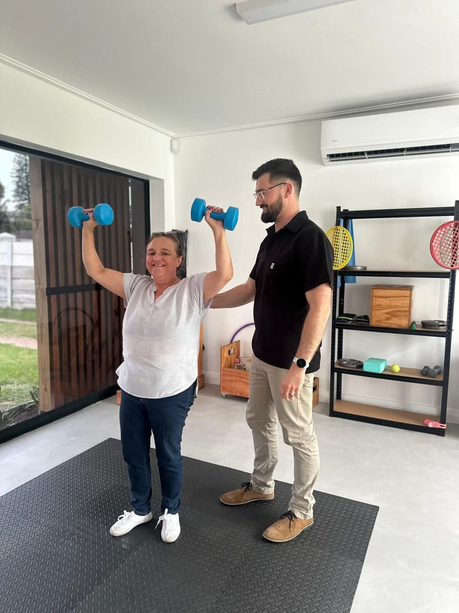